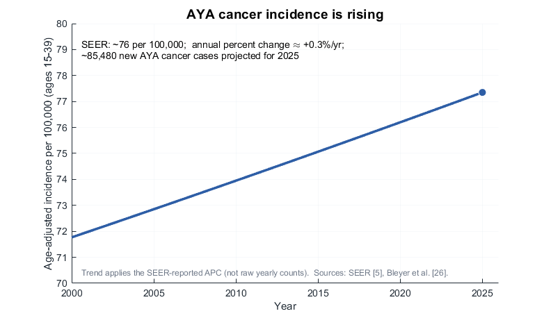
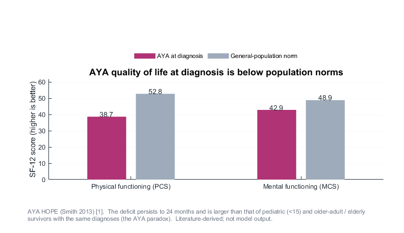
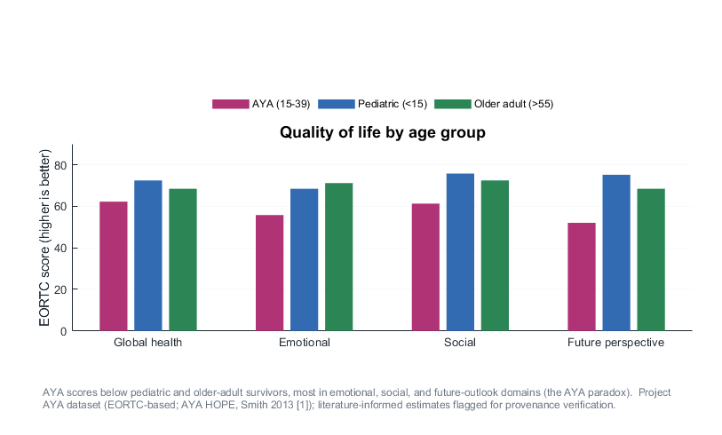

Empirical basis: incidence, age, and diagnosis
The model targets the adolescent and young adult (AYA) population and distinguishes outcomes by diagnosis. The first three figures give the empirical basis from published evidence. The fourth is a model output: cancer type enters the verified simulation only through cited inputs (5-year survival and treatment intensity), and HRQoL emerges by diagnosis. Inputs taken from the project AYA dataset are literature-informed estimates flagged for provenance verification, so these figures are exploratory; comparisons across pediatric and older-adult groups stay empirical, since the simulation spans ages 15-39.

- AYA (15-39) age-adjusted incidence is about 76 per 100,000 and rising at roughly +0.3% per year
- About 85,480 new AYA cancer cases are projected for 2025
- The upward trend motivates a population-level, longitudinal modeling focus on AYA survivorship
- The plotted line applies the published annual percent change and does not show raw year-by-year counts

- At diagnosis, AYA physical (PCS 38.7) and mental (MCS 42.9) scores fall far below the norms (52.8 / 48.9)[1]
- The deficit persists to 24 months and persist after treatment[2]
- AYAs score lower than pediatric and older-adult survivors with the same diagnoses (the AYA paradox)
- The below-norm pattern holds across diagnoses, which is the empirical case for an AYA-specific model

- AYA survivors score below both pediatric and older-adult survivors on every domain shown
- The gap is largest for emotional functioning and future perspective, the AYA-specific domains
- Older adults score near or above pediatric on emotional and social, which isolates the AYA dip
- Values are the project AYA dataset (EORTC-based; AYA HOPE [1]), flagged for provenance verification

- High-survival, lower-intensity cancers (thyroid, testicular, melanoma) reach the highest HRQoL
- Low-survival or intensive-treatment cancers (leukemia, colorectal, sarcoma) reach the lowest
- The ordering emerges directly from the cited inputs, survival and treatment
- Inputs are flagged estimates and survival stands in for durable remission, so the figure supports exploration and does not forecast